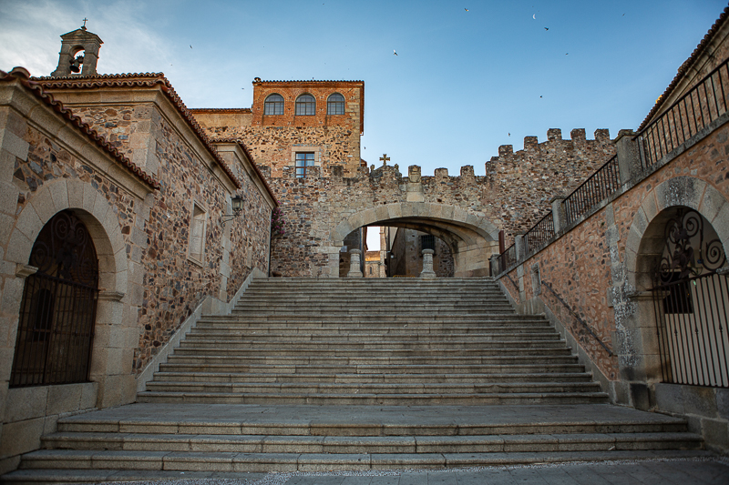
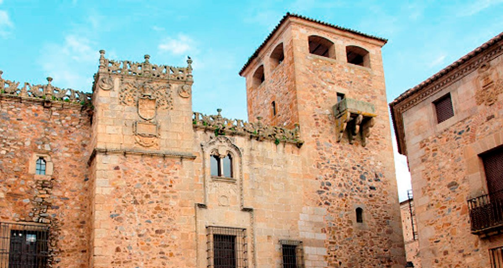
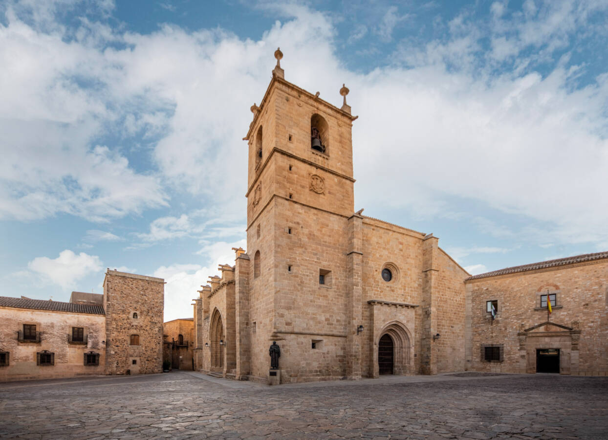

La Ciudad Monumental
Cáceres posee uno de los conjuntos urbanos de la Edad Media y del Renacimiento más completos del mundo, lo que le valió el título de Patrimonio de la Humanidad por la UNESCO en 1986.

Torre de Bujaco
El símbolo de la ciudad. Una torre albarrana de origen árabe (siglo XII) de 25 metros de altura. Ofrece las mejores vistas panorámicas de la Plaza Mayor y del casco antiguo.

Arco de la Estrella
La principal puerta de entrada a la Ciudad Monumental, rediseñada en el siglo XVIII por Manuel de Lara Churriguera en forma sesgada para permitir el paso de los carruajes.

Palacio de los Golfines de Abajo
Una joya que mezcla el estilo gótico con el plateresco renacentista. Destaca por su imponente fachada y por haber sido el lugar de alojamiento de los Reyes Católicos durante sus visitas a la ciudad.

Concatedral de Santa María
El templo cristiano más importante de Cáceres, de estilo románico de transición al gótico. En su interior alberga un impresionante retablo mayor de cedro sin policromar.